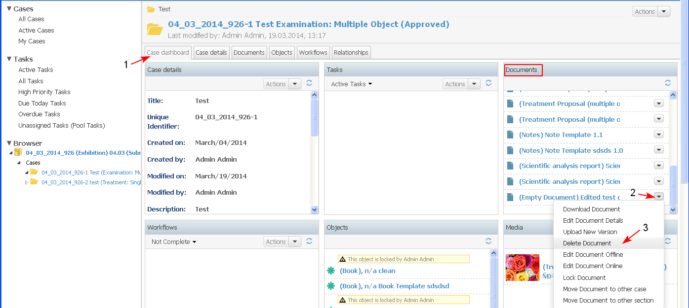
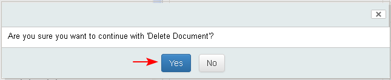

Preconditions
- iDoc may be deleted only if it is not indicated as mandatory in the case to which it is attached.
- iDoc may be deleted only if it is not involved in a case task workflow that is with status other than "Pending".
- iDoc may be deleted only by the user who created it or by an user with corresponding administrative permissions.
- The user selects the "Delete" action from:
- selected document - actions next to the document, "Delete Document" button (1-2-3)
- document opened for review - list with actions on the document, "Delete" button

- The system displays a confirmation message with possibilities to confirm or cancel. The user clicks "Yes".

- The selected iDoc is deleted, then:
- All embedded references to other 1st class system objects are deleted but the objects themselves are not deleted.
- If the iDoc is related with a task with status "Pending" (e.g., review/approve Treatment Proposal) and the iDoc is deleted, the reference to the task workflow is deleted also. The task status cannot be changed until a new iDoc has been associated with that task.